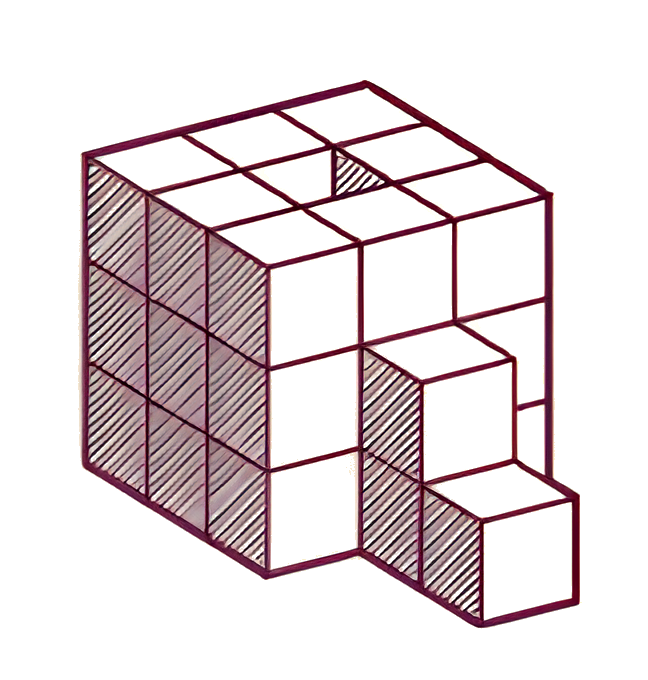

Work
Featured Work
Website Designs
About
Services
Contact
Start a Project
Digital
Solutions
Built to
Perform
Everything you see here was built by me. Let’s bring your vision to life.
Start a Project
View Our Work